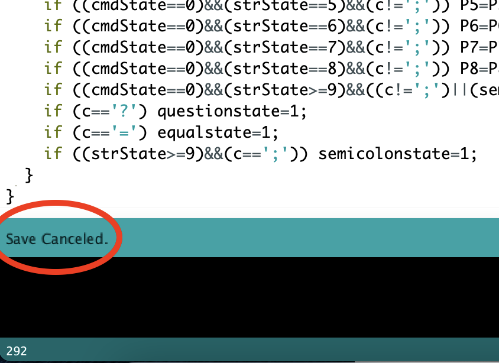
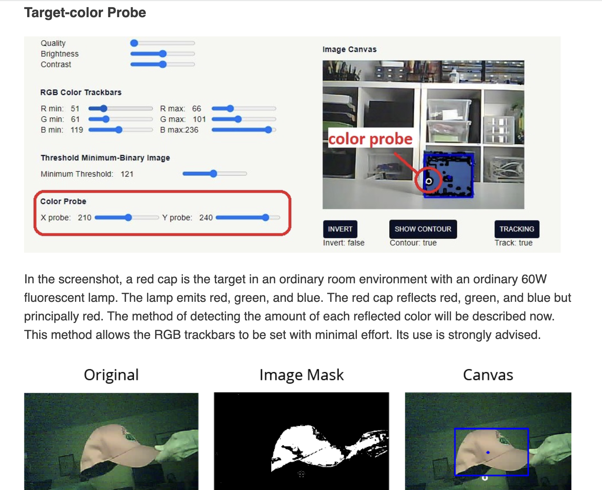

<div class="container-fluid">
<h3 style="text-align: center;"> Week 11: Computer Programming </h3>
<h4 style="color: black;background-color:#6EDCF7;"> ESP32 Color Tracking</h4>
For this week’s assignment I tried a few different things before deciding to follow the RandomNerd tutorial on how to make the ESP32-Cam have color detection and tracking. I loved working with the camera last last week so I was excited to explore more of what it can do. I originally tried to follow the tutorials to use websockets to control a stepper motor because I thought that could be useful for my final project but I was having so much trouble at every single step of the process (the required installs weren’t cooperating on my computer, my microcontroller wasn’t uploading, etc.). So after becoming increasingly frustrated with the many setbacks, I decided it might be nice to take a bit of a break from thinking about my final project and follow a tutorial that just seemed fun! So that is how I landed on the <a href="https://randomnerdtutorials.com/esp32-cam-opencv-js-color-detection-tracking/" >"ESP32-CAM Web Server with OpenCV.js: Color Detection and Tracking"</a> tutorial, which thankfully ended up being a lot simpler to follow.

Oddly the first problem I encountered had nothing to do with the project itself: I can no longer get arduino sketches to save to my computer. If I click “save” or “save as” it immediately says save canceled. I tried to google the error but wasn’t finding anything helpful. I checked my save settings and they were set to save sketches to the same place as always, so I’m really not sure what the problem is. I’m not exactly sure when this started happening but I noticed it last week. It wasn’t an issue then because I could just save my code by copying it into a google doc, but the entire basis of the color detection code is having 2 programs (server and client) that can refer to one another. I spent probably an embarrassingly long time trying to fix this or find a loophole — it feels like it must be an easy solution but I have yet to find it. Instead, I found the loophole that I could successfully save OVER existing sketches so I found some old sketches that were fine to erase and saved the files that way. This worked like a charm and I was able to move on.

The rest of the setup was fairly simple (I had to remember that the IP addresses never work for me on Chrome and I need to use Safari) but I got a bit stuck when it came to the setting of the color trackbars and color probe. The guide implied that it should be fairly easy to set the XY probe and then just adjust the trackbars until the target object is all white and the background is black. They did acknowledge that this becomes far more difficult when you can’t control for the light in your surroundings so that may have been my issue, but I was having an extremely difficult time getting it to recognize even what seemed to me like very bright colors that contrasted the background. I tried the blue dress I was wearing, my yellow motor, and the pink cushions our devices sometimes come pinned into. After a long time, I was still struggling to get enough of a selection to track successfully. I tried a different tactic where instead of trying to get it to focus on what I want, I just randomly adjusted the levels and as I saw what it was naturally catching I just tried to further highlight that. This worked much better and I was finally able to get it working. Somehow it did a very good job finding my hand, which was somewhat surprising to me because my neck and arms were also in view and theoretically should have been the same color and thrown off the detection. But regardless of why, I was just happy it was working! I was very impressed with how well it continued to track my hand even when I rotated it or flattened it. See video below!
<center><video width="800" height="auto" controls>
<source src="trackingworking.mp4" type="video/mp4">Your browser does not support the video tag.</video></center>